This is a static variant of the video under
Help - HOWTO/Tutorials - Install (https://kororaproject.org/help/howto-tutorials/install/) - [HOWTO] Korora Install.
It particularly includes *EFI* installation.
If you can improve the document - correct errors, add something, clarify something - please say so!
BEFORE YOU BEGIN
DISABLE Microsoft difficulties
Of course, only if you have Windows pre-installed!- Secure boot
This is *not* an integral part of EFI. Fedora reckons to cope with it, but it is simpler just to turn it off. You do this in the BIOS setup of your computer, access to which at startup varies according to brand: Del, Esc, Fn. Just look for the item and disable it. - Fast shutdown
Windows 8 implements a fast shutdown feature that helps speed up shutdown and startup operations on a single-boot computer. Unfortunately, this feature can cause filesystem corruption if it's used on a multi-boot computer. You can disable the feature by launching an Administrator Command Prompt window and typing:
powercfg /h off
The hard disc (or its equivalent like SSD)
The trickiest part of any Linux installation is how you organise - or let be organised - the hard disc(s), which depends a lot on your present setup and your own competence. You should have an idea of how your disc is currently divided up, and how Korora is going to be accommodated. Here are some generic situations:- You know nothing about partitions, but are happy to give the entire disc to the Korora installation. Easy.
- You know nothing about partitions and currently have just Windows installed - which you want to preserve. You put your faith in the Korora installer Anaconda to sort things out for you - either automatically or guided.
None-the-less, it will pay you to use Windows itself to free up disc space in advance. See the notes below on this.
Be warned that boxes with Windows plus OEM stuff can have 5 partitions just for starters! - You know about partitions, have just Windows installed, and follow the advice below on using Windows to free up disc space in advance.
- You already have Linux installed (with or without Windows), so you implicitly have some understanding of partitions, and know enough to pre-create or allow for the creation of the necessary disc space.
How will Korora boot?
Booting operating systems is very different between old BIOS/MBR boxes and new EFI/GPT boxes.Booting BIOS/MBR systems
All booting starts from the Master Boot Record (MBR). Let Korora take control? This means letting it put the bootloader Grub on the MBR - designated by the whole disc devicesdX. Linux installations mostly want to take over the MBR and rely on its Grub menu to load any other OS's found, Windows included, when Grub was installed. This is the normal choice. The next Linux will do the same...
If you already have a multi-booting setup, this would be overwritten. To preserve such an existing setup, *install Grub to the root partition*, sdXY rather than sdX, and it is up to you to get it loaded, but you will know how to. This implies a boot manager, which may be truly independant, or using Windows' boot menu.
Booting EFI/GPT systems
This is the new norm, and booting is more flexible. The principle disc must have a special partition called the EFI System Partition (alias ESP) which contains the\EFI\ directory tree. Each OS stores its bootloader in an EFI sub-directory named after itself: \EFI\fedora\ for Korora. It is also registered in the EFI NVRAM, including a list called BootOrder - each OS qualified by an 'active' flag. When the system starts, the BIOS should try each active OS in BootOrder until one works, otherwise boot from the default bootloader
\EFI\Boot\bootx64.efi
This is the nearest thing to the old MBR, but is only invoked as a last resort.
Windows-equipped EFI systems may be configured to boot Windows come what may:-
\EFI\Microsoft\Boot\bootmgfw.efi
which will also be the initial default boot loader \EFI\Boot\bootx64.efi .
In addition, before all this, EFI boxes normally have a key to press *quickly* on startup (mine is F12) to show an *EFI boot menu* of each registered OS, plus possibly bootable devices, to select them directly. If the disc is chosen, the default bootloader is invoked.
Like for MBR, any installed Linux's Grub boot menu will normally offer the other OS's, so theoretically it should not matter who gets booted initially - except Windows. Notwithstanding this, if you want to multiboot more than one Linux + Windows, as for MBR it pays to have an independant boot manager which must be the 'OS' actually booted. rEFInd is very recommended, or possibly Gummiboot. The former (? and second) dynamically finds all OS's, so you do not have to 'add' Korora to it.
Despite all this choice, any Linux must create its own \EFI\... directory (here \EFI\fedora\) and put into it at least its own bootloader, nowadays mostly grubx64.efi (and for Fedora/Korora several other things); and add itself to the EFI NVRAM, and BootOrder. If it does nothing more, it should be bootable:
- from the EFI boot menu
- or its position ('active') in BootOrder
- or a boot manager.
Most Linux's stop there. To improve its chances, it can also overwrite the system default bootloader \EFI\Boot\bootx64.efi with its own, assuming global booting responsibility *if* this default item gets invoked. This is what Korora/Fedora currently does - which can be naughty.
Korora (alias Fedora) EFI installation currently seems to unconditionally overwrite the default bootloader
\EFI\Boot\bootx64.efi
You must back it up beforehand. Easiest is simply to copy it to another name in the same directory.
Acessing the EFI System Partition, the ESP
It is in your interests to know how to access the ESP, especially when things go wrong, but also to do deliberate manipulations. It is commonly the first partition on the disc: sda1, sometimes the second: sda2 (for the first disc sda). You need to know. It is a normal FAT32 filesystem containing conventionally a directory tree\EFI\... with a sub-directory per installed OS e.g. \EFI\fedora\ .
- From WINDOWS
Locate Command Prompt in the Start menu, right-click it, and select Run as Administrator. This action opens a Command Prompt window with administrative privileges. Type
mountvol S: /S
in the Administrator Command Prompt window. This makes the ESP accessible as drive S: from that window. (You can use a drive identifier other than S: if you like.) - From LINUX
The ESP is usually already mounted on /boot/efi or /boot/EFI, these names are not obligatory. You treat it like any other directory, but probably will need to be root to do anything.
In the unlikely event that the ESP is not already mounted, you will need to do that (as root) where/dev/sdXYis the correct disc and partition for the ESP:
mount -t vfat /dev/sdXY {mountpoint}
Freeing up disc space in advance using Windows itself
You have just Windows already installed on your system - the typical situation for a purchased computer. Windows will implicitly have all the disc space, so you must free some up for Korora (at least 10Gb realistically, more if possible). Often Windows systems have a D: DATA partition which remains unused! If so, use or shrink that. Otherwise you must shrink the main Windows partition disc C: .It is recommended to do all manipulation of Windows partitions/discs from Windows itself, Disk Manager. Any Linux installer will do its best, but it is safest to do all you can beforehand from Windows. Search the Internet for tutorials; exact procedures vary per Windows version, and may involve temporarily eliminating the swap file PAGEFILE.SYS, setting virtual memory to 0.
Always defragment beforehand any Windows partition/disc you want to shrink.
Disk Manager can delete, create and re-size partitions. You can use it to pre-structure (but not format) the disc for Linux, or just leave unstructured free space. For shrinking C: you may get away with just the default shrink option: try your luck.
Always re-boot Windows a couple of times after defragmenting or altering its disc structure.
THE LIVE KORORA INSTALLATION
You do the installation from Korora running 'live' from DVD or USB stick. To achieve this, you will probably have to tell your computer BIOS to boot from the appropriate device. It is important to note that, with a working Internet connection, you can access the Internet during the installation e.g. to read this HOWTO. This is very handy, but is likely to be slow.Set keyboard layout for doing the installation
From your live session, before launching the installation, make sure your keyboard layout is OK for doing the installation; otherwise you may have problems doing the small amount of typing called for.Works:
System - Preferences - Keyboard
same as:
System - Control Centre - Hardware - FIRST keyboard icon
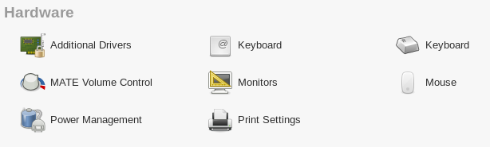
First (middle) Keyboard icon ->
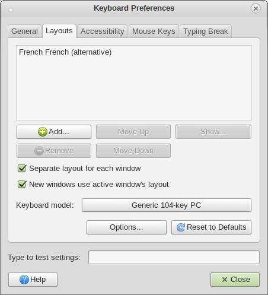
Does not work:
System - Administration - Keyboard
same as:
System - Control Centre - Hardware - SECOND keyboard icon
Internet
Connect this if possible.Install to Hard Drive: Double-click the desktop icon.
WELCOME TO KORORA: language
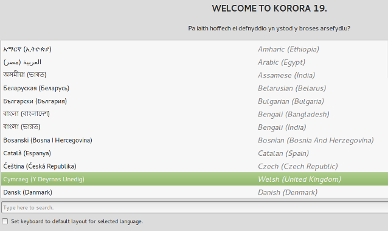
Choose the language for the system to be installed. If your keyboard layout is the same, tick the little box bottom left. Click Continue.
The INSTALLATION SUMMARY SCREEN
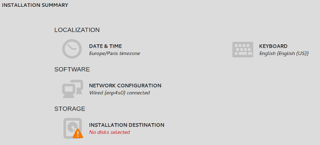- LOCALISATION
- DATE & TIME: Set your timezone.
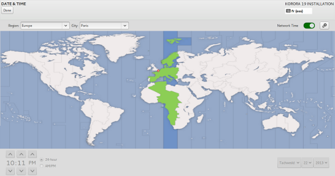
If you opt for automatic NTP setting (top right), there is nothing more to do; even if the hour is wrong, you cannot correct it here. Nor can you without NTP! BUG?
- KEYBOARD: Chose or add ("+") that for the installed system; try it! Remove ("-") unwanted layouts.
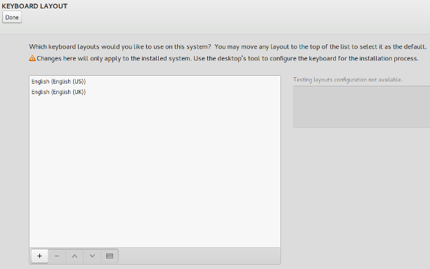
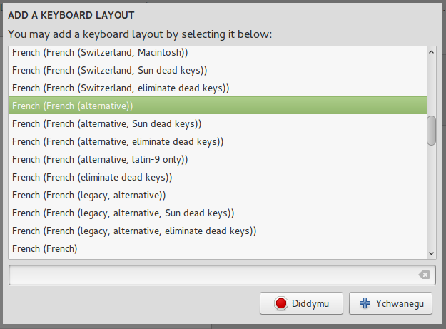
- SOFTWARE/NETWORK: The main reason for doing this is to set the HostName.
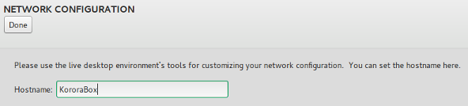
STORAGE
This is where things get unsure, hence the video. See the introductory section on organising the disc.- You are willing to give the whole disc to Korora: let it do its thing. Easy.
- You have just Windows already installed on your system occupying all the disc (you did not free up space in advance). You can either trust Anaconda to make necessary adjustments automatically, or be guided through its proposals.
- You have just 1 Linux system, which occupies all the disc. You will need to free up space yourself beforehand, and must know how to.
- You already have >1 operating system installed, multi-booting. Implicitly you understand enough to steer the Korora (or any other Linux) installation, freeing up space, re-structuring the partitions if need be either beforehand or during the installation.
I always prefer to do this independantly beforehand, and direct the installation to pre-designated partitions.
What partitions you will need
The minimum for all Linux sytems are:- A (typically large, at least 10Gb) partition for the root filesystem / most commonly formatted as
ext4among other possibilities. - A small one (a few Gb) for swap.
If you have previously installed any Linux, the swap partition will already exist. - Plus, for EFI systems:
The EFI System Partition, the ESP, 300Mb - 1Gb, formatted FAT32, which will be mounted on /boot/efi/ for Korora.
EFI systems will normally already have this essential partition, probably assda1orsda2. - Optionally, but very sensibly:
A large partition for all your data, mounted as you define.
INSTALLATION DESTINATION
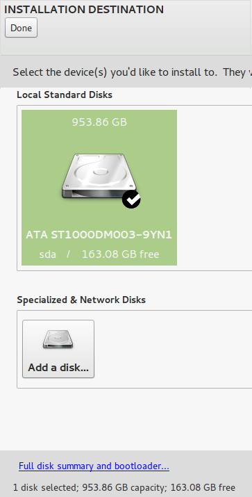
Shows discs (or equivalent storage devices like SSD) on your system. Click on the disc you want to install to so that it is *ticked*.
Then click the "Full disk summary and bootloader" link bottom left ->
SELECTED DISKS
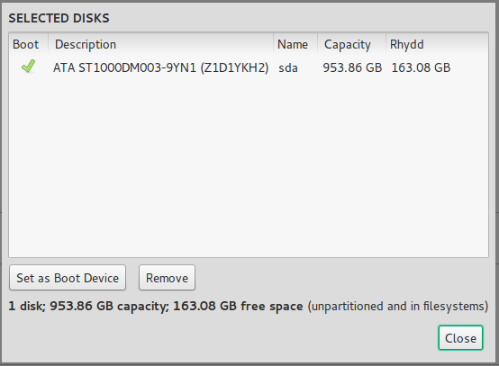
[Doubt: Does the 'Boot' tick mean also that you want the bootloader installed, or merely that you will be booting somehow on this disc? Do you really have to specify bootloader installation additionally?].
This may show immediately the disc in question as bootable (Boot column ticked).
*Select the disc* in the box.
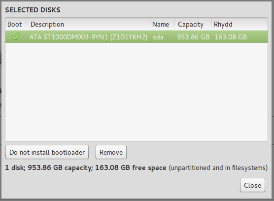
For MBR:
- If you want Korora Grub on the MBR, i.e. if you want to see the Korora Grub menu on startup (which will provide access to other OS's installed at the time), choose "Set as boot device" and ensure the Boot column is ticked.
- If you want to preserve the existing startup boot system, choose "Do not install bootloader" and ensure the Boot column is UNticked.
[Question: this implies putting Grub on the root partition boot sector; how/where is this specified? Somebody please elaborate].
For EFI:
[This screen is enigmatic for EFI. The installer *must* create and populate \EFI\fedora\ and add the OS into NVRAM. We think the only debate is whether to replace the existing default bootloader or not].
At present, Anaconda will overwrite the default bootloader \EFI\Boot\bootx64.efi anyway. Make sure you backed up the original one.
- If you want Korora Grub to replace the default bootloader, choose "Set as boot device" and ensure the Boot column is ticked. Remember, this is only invoked if prior boot choices are ineffective.
- If you want to preserve your existing boot sequence, choose "Do not install bootloader" and ensure the Boot column is UNticked.
This yields a warning "You have chosen to skip bootloader installation. Your system may not be bootable".
[In fact we think this makes no difference, and that the default bootloader gets overwritten anyway.
What exactly does "skip bootloader installation" mean? To clarify].
[At present, try the second option initially, please note and report the contents or output of:
\EFI\
\EFI\Boot\
\EFI\fedora\
efibootmgr -v
If \EFI\fedora\ is not created and populated with at least grubx64.efi and shim.efi then re-install with the first option].
Close ->
INSTALLATION OPTIONS
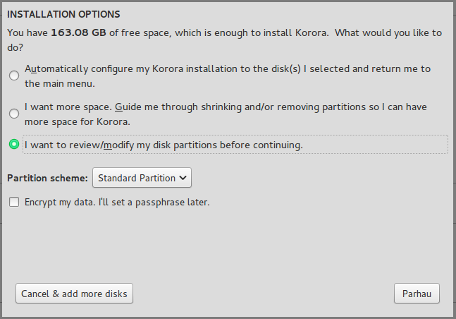- Automatically configure...
- I want more space. Guide me...
- I want to review/modify my disk partitions
I have only persued the last, commonly called custom partitioning. My discs are always pre-partitioned.
Continue ->
MANUAL PARTITIONING
This is *the* puzzle.
THE INITIAL SITUATION (1)
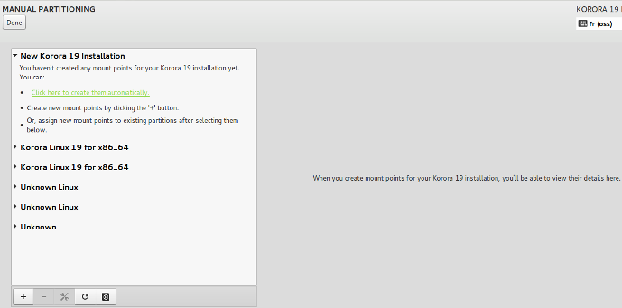
This shows a typcal opening screen: the LH panel shows the prospective Korora (Fedora) makeup first, empty; then what it understands of the disc below. Any unexpanded entry can be expanded by clicking on its arrow, and vice versa. The screenshot shows 4 other installed Linux's, and the great Unknown at the bottom...
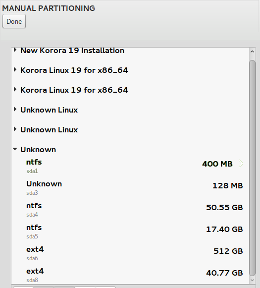
hides another Linux, OEM and Windows partitions. Curiously 170Gb of genuinely free (unallocated) disc space is *not* shown. BUG?
Anaconda works by taking disc space from the lower part (or creating new partitions from free space, the bottom left + button) and adding it to the new installation. As we have seen, this needs at least a root (/) partition exclusive to itself, and a swap partition - one suffices for all installed Linux's, so if there is already one, you have no need to define one. For EFI, the ESP also needs including.
I want to install *this* Korora in place of the second existing Korora...
THE INITIAL SITUATION (2)
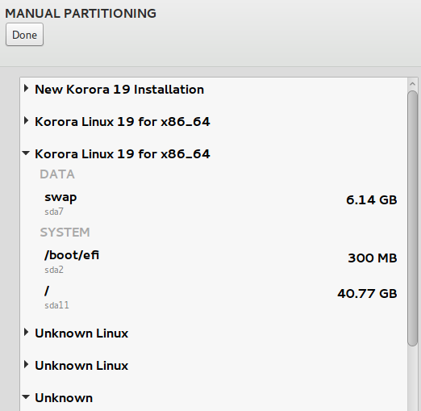
which is on sda11. In this case, its two other partitions are common to other systems:
- swap on sda7
- ESP on sda2.
[Be warned that despite this example, do *not* try multiple installations of the same Linux distribution on an EFI box - it does not (yet) work, due to just one \EFI\{distribution}\ directory. It is fine on an MBR box].So, to structure our new Korora installation, select a partition from the lower part of the LH panel, and on the RH side:
- specify its mount point
- for non system-wide partitions, *click Reformat* (otherwise nothing happens; BUG?)
- Update Settings
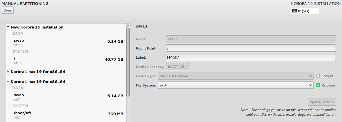
Earlier screenshots INITIAL SITUATION (1) & (2) and that above show the 'before' and 'after' effect of defining the root partition. Partition sda11 has been taken from the installation being overwritten and added as / of our new installation. At the same time, automatically, the swap partition sda7 has been added.
This suffices for an MBR system; click "Done" (unless you wish to add other partitions e.g. for data).
For EFI, the ESP could be added automatically too, but currently you have to add it manually...
Select the ESP, here sda2, anywhere you see it on the LH panel, and on the RH side:
- specify its mount point as /boot/efi
- do NOT Reformat (except for a virgin system with no previous ESP)
- Update settings
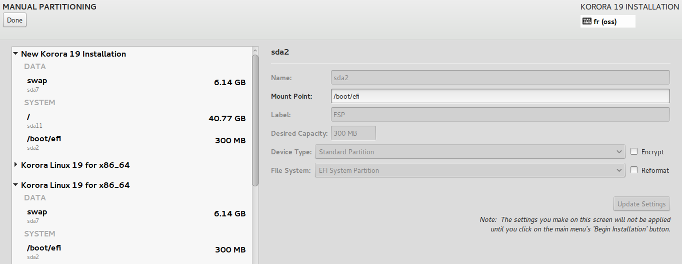
This screenshot shows the final result; the EFI Korora installation-to-be is fully defined - unless you want to add further partitions e.g. for data.
Evidently the number of paths through this process are many, and this describes only the situation of assigning existing partitions. Other users please add examples.
Click "Done" at last! ->
SUMMARY OF CHANGES
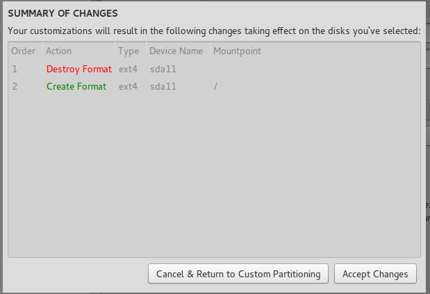
This shows what changes Anaconda intends to make to the disc - of doubtful worth in this example. [BUG?]. If you agree, click "Accept Changes."
This returns to the INSTALLATION SUMMARY SCREEN...
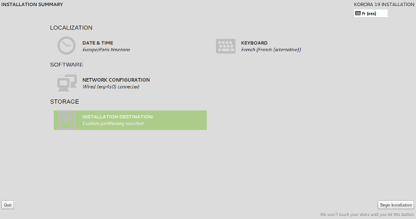
with nothing flagged as wanting: compare its original state [Image 040]. It is only when you click "Begin Installation" bottom right that the disc is touched; otherwise you can re-define things ad infinitum.
Installation, CONFIGURATION

While the system is being written to the disc, you can and should do the USER SETTINGS:
- ROOT PASSWORD to set the root password.
- USER CREATION to define at least one user (yourself), possibly others. This is self-explanatory.
[Can someone provide screenshots of each please?]
RE-BOOTING
At the end, if on an MBR box you asked for the bootloader to be put on the disc itself sdX (MBR), when you re-boot you should see the Korora Grub boot menu. Otherwise you have your own way of booting OS's.On an EFI box you might see the Korora Grub menu. If not, do not worry: you can always get to it via the EFI boot menu, or your boot manager.
Accessing the EFI NVRAM
You may need to do this to investigate booting problems. (Accessing the ESP was described under BEFORE YOU BEGIN). It is very simple. As root, at the command line, type: efibootmgr
This outputs a neat summary of the currently installed OS's and related info like BootOrder, activations.
efibootmgr -v
provides more information, most importantly for us the path of the bootloader for each installed OS. It is all self-evident, and you will understand your EFI system at once.
man efibootmgr
provides an instructive explanation of itself.
http://www.rodsbooks.com/efi-bootloaders/
is the essential EFI web site if you are interested. This document contains a few fragments from it, gratefully acknowledged.